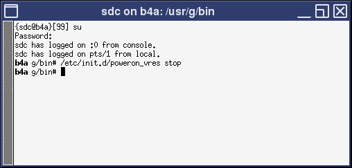

Shutting Down the ICN from the Root Level
Shutting down the host computer shuts down the system safely and turns off the power to the host computer.
Procedure
- Log into the application using the root login.
- In the xterm window, type: /etc/init.d/poweron_vres stop and press ENTER.
Figure 1. VRE Stop Command

The ICN should shut off after one minute. The Dell ICN is shut off (powered down) if the green power LED located on the upper left side of the front of the ICN is not illuminated.